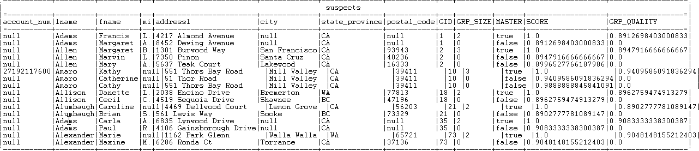

Warning
This component will be available in the Palette of the studio on the condition that you have subscribed to any Talend Platform product.
|
Component family |
Data Quality | |
|
Function |
tMatchGroup compares columns in the input flow by using a defined matching method and groups similar encountered duplicates together. In defining a group, the first processed record of each group is the master record of the group; the other records are computed as to their distances from the master records and then are distributed to the due master record accordingly. | |
|
Purpose |
This component helps ensuring the data quality of any source data. | |
|
Basic settings |
Schema and Edit schema |
A schema is a row description, i.e., it defines the number of fields that will be processed and passed on to the next component. The schema is either built-in or remote in the Repository. Click Sync columns to retrieve the schema from the previous component in the Job. The output schema of this component contains the following read-only fields: GID: represents the group identifier. GRP_SIZE: counts the number of records in the group, computed only on the master record. MASTER: identifies the record used in the matching comparisons as a master record. There is only one master record per group. Each input record will be compared to the master record, if they match, it will be in the group. SCORE: measures the distance between the input record and the master record according to the matching algorithm used. In case the tMatchGroup component is used to have multiple output flows, the score in this column decides to what output group the record should go. GRP_QUALITY: only the master record has a quality score which is the minimal value in the group. |
|
|
|
Built-in: You create and store the schema locally for this component only. Related topic: see Talend Data Integration Studio User Guide. |
|
|
|
Repository: You have already created and stored the schema in the Repository. You can reuse it in other projects and job designs. Related topic: see Talend Data Integration Studio User Guide. |
|
Key Definition NoteA configuration wizard is available to help you complete this table. For further information, see the section called “Configuration wizard”
|
Input Key Attribute |
Select the column(s) from the input flow on which you want to apply a matching algorithm. NoteWhen you select a date column on which to apply an algorithm or a matching algorithm, you can decide what to compare in the date format. For example, if you want to only compare the year in the date, in the component schema set the type of the date column to Date and then enter "yyyy" in the Date Pattern field. The component then converts the date format to a string according to the pattern defined in the schema before starting a string comparison. |
|
|
Matching Type |
Select the relevant matching algorithm from the list: Exact Match: matches each processed entry to all possible reference entries with exactly the same value. It returns 1 when the two strings exactly match, and 0 otherwise. Exact - ignore case: matches each processed entry to all possible reference entries with exactly the same value while ignoring the value case. Soundex: matches processed entries according to a standard English phonetic algorithm. It indexes strings by sound, as pronounced in English, for example "Hello": "H400". Levenshtein (edit distance): calculates the minimum number of edits (insertion, deletion or substitution) required to transform one string into another. Using this algorithm in the tMatchGroup component, you do not need to specify a maximum distance. The component automatically calculates a matching percentage based on the distance. This matching score will be used for the global matching calculation, based on the weight you assign in the Confidence Weight field. Metaphone: Based on a phonetic algorithm for indexing entries by their pronunciation. It first loads the phonetics of all entries of the lookup reference and checks all entries of the main flow against the entries of the reference flow. Double Metaphone: a new version of the Metaphone phonetic algorithm, that produces more accurate results than the original algorithm. It can return both a primary and a secondary code for a string. This accounts for some ambiguous cases as well as for multiple variants of surnames with common ancestry. Soundex FR: matches processed entries according to a standard French phonetic algorithm. Jaro: matches processed entries according to spelling deviations. It counts the number of matched characters between two strings. The higher the distance is, the more similar the strings are. Jaro-Winkler: a variant of Jaro, but it gives more importance to the beginning of the string. q-grams: matches processed
entries by dividing strings into letter blocks of length
custom...: enables you to load an external matching algorithm from a Java library. The custom matcher class column alongside is activated when you selected this option. For further information about how to load an external Java library, see the section called “tLibraryLoad”. For further information about how to create a custom matching algorithm, see the section called “Creating a custom matching algorithm”. For the related scenario about how to use a custom matching algorithm, see the section called “Scenario 2: Using a custom matching algorithm to match entries”. |
|
|
Confidence Weight |
Set a numerical weight for each attribute (column) of the key definition. The values can be anything >= 0. |
|
Blocking Definition |
Input Column |
If required, select the column(s) from the input flow according to which you want to partition the processed data in blocks, this is usually referred to as “blocking”. Blocking reduces the number of pairs of records that needs to be examined. In blocking, input data is partitioned into exhaustive blocks designed to increase the proportion of matches observed while decreasing the number of pairs to compare. Comparisons are restricted to record pairs within each block. NoteUsing blocking column(s) is very useful when you are processing very big data. |
|
Advanced settings |
Store on disk |
Select this check box if you want to store processed data blocks on the disk to maximize system performance. Max buffer size: Type in the size of physical memory you want to allocate to processed data. Temporary data directory path: Set the location where the temporary file should be stored. |
|
|
Multiple output |
Select the Separate output check box to have three different output flows: -Uniques: when the group score (minimal distance computed in the record) is equal to 1, the record is listed in this flow. -Matches: when the group score (minimal distance computed in the record) is higher than the threshold you define in the Confidence threshold field, the record is listed in this flow. -Suspects: when the group score (minimal distance computed in the record) is below the threshold you define in the Confidence threshold field, the record is listed in this flow. Confidence threshold: set a numerical value between the current Match Interval and 1. Above this threshold, you can be confident in the quality of the group. |
|
|
Matching Algorithm |
Select an algorithm from the list - only one is available for the time being. Simple VSR Matcher: This algorithm is based on a Vector Space Retrieval method that specifies how two records may match. Match Interval: Enter the match probability. Two data records match when the probability is above the set value. |
|
|
Sort the output data by GID |
Select this check box to group the output data by the group ID. |
|
|
Output distance details |
Select this check box to add a fixed output column MATCHING_DISTANCES which gives the details of the distance between each column. |
|
|
tStatCatcher Statistics |
Select this check box to collect log data at the component level. |
|
Usage |
This component is an intermediary step. It requires an input flow as well as an output flow. | |
|
Limitation/prerequisite |
n/a | |
The configuration wizard is used to help you create the matching rule that best fulfills your needs. Once you have configured the input data and linked the data to the tMatchGroup component, you can right-click it on the workspace and from the contextual menu, select Configuration Wizard to open it.
The following figure presents an example of accessing this wizard.

In this example, the input component and the tMatchGroup component are already configured and linked together, so when you open the configuration wizard, this wizard retrieves the Key definition table as well as its contents inside from the Component view of tMatchGroup, executes it and displays the matching results.
If there are no contents in the Key definition table, this wizard retrieves only the table.
Warning
This Configuration wizard cannot be enabled until you have linked the input data to the tMatchGroup component.

This Configuration wizard is composed of three areas:
the Component view, which reproduces the key fields of the Basic settings and the Advanced settings views of tMatchGroup,
the matching chart, which presents the graphic matching result,
the matching table, which presents the details of the matching result.
From the Component view, you can edit an existing matching rule or create a matching rule from scratch. The parameters required to edit or create a matching rule are:
The Schema and the Key definition parameters are the same as those you can specify in the Basic settings view of the component.
The Limit field indicates the maximum number of rows to be processed by the matching rule(s) in this wizard.
The Match threshold field corresponds to the Match interval field of the Advanced settings view.
When you need to create alternative rules in the same configuration wizard, you have to open other Component views in addition to the default one. In this situation, simply click the plus button as many times as needed on the up-right corner of this Component view and enter the required parameters in each view.
Once a given matching rule is defined, click the Refresh button to execute it. Then the matching result is displayed in the matching chart and the matching table.
Note
To implement one of the alternative rules into the tMatchGroup component, click the Component view containing this rule to display it and click OK to validate this rule and close this wizard.
From the matching chart, you can have a global picture about the existing duplicates of the analyzed data.

For example, in this figure, the matching chart indicates that:
100 items in total are analyzed and arranged into 84 groups according to the given rule.
When a group has no items, this chart does not display it.
75 groups have 1 item in each. These items are unique.
8 groups have 2 items in each. In each group, the 2 items are duplicates of each other according to the given rule.
1 group has 9 items. They are duplicates of one another according to the given rule.
From the matching table, you can read details about the different duplicates.

For example, the table in this figure indicates the details of each item and colors each of them corresponding to the groups presented in the matching chart.
You can click the first, the previous, the next or the last buttons under the table to run through all of the pages of the matching details.
At the end of the configuration, to implement the rule that satisfies you, click the Component view of this rule to display it and then click OK. The contents of the active view is loaded into the corresponding fields of the Component view of tMatchGroup on the Design workspace.
This scenario describes a basic Job that compares columns in the input file using the Jaro-Winkler matching method on the lname and fname column and the q-grams matching method on the address1 column. It then groups the output records in three output flows:
-Uniques: lists the records which group score (minimal distance computed in the record) is equal to 1.
-Matches: lists the records which group score (minimal distance computed in the record) is higher than the threshold you define in the Confidence threshold field.
-Suspects: lists the records which group score (minimal distance computed in the record) is below the threshold you define in the Confidence threshold field.
Note
For another scenario that groups the output records in one single output flow, see the section called “Scenario 2: Comparing columns and grouping in the output flow duplicate records that have the same functional key”.
Drop the following components from the Palette onto the design workspace: tFileInputExcel, tMatchGroup and three tLogRows.
Connect tFileInputExcel to tMatchGroup using the Main link.
Connect tMatchGroup to the three tLogRow components using the Unique rows, Confident groups and Uncertain groups links.
Warning
To be able to set three different output flows for the processed records, you must first select the Separate output check box in the Advanced settings view of the tMatchGroup component. For further information, see the section about configuring the tMatchGroup component.
The main input file contains eight columns: account_num, lname, fname, mi, address1, city, state_province and postal_code. The data in this input file has problems such as duplication, names spelled differently or wrongly, different information for the same customer.

Note
You can create the input file used in this scenario if you execute the c0 and c1 Jobs included in the data quality demo project, TDQEEDEMOJAVA, you can import from the login window of your Talend Data Quality Studio. For further information, see the Talend Data Quality User Guide.
In the Basic settings view of tFileInputExcel, fill in the File Name field by browsing to the input file and set other properties in case they are not stored in the Repository.

Create the schema through the Edit Schema button, if the schema is not already stored in the Repository. Remember to set the data type in the Type column.

Double-click tMatchGroup to display the Basic settings view and define the component properties.

Click Sync columns to retrieve the schema from the preceding component.
Click the Edit schema button to view the input and output schema and do any modifications in the output schema, if necessary.

Note
In the output schema of this component there are five output standard columns that are read-only. For more information, see the section called “tMatchGroup properties”.
Click OK to close the dialog box.
In the Key definition table, click the plus button to add to the list the column(s) on which you want to do the matching operation, lname, fname and address1 in this scenario.
Note
When you select a date column on which to apply an algorithm or a matching algorithm, you can decide what to compare in the date format.
For example, if you want to only compare the year in the date, in the component schema set the type of the date column to Date and then enter "yyyy" in the Date Pattern field. The component then converts the date format to a string according to the pattern defined in the schema before starting a string comparison.
Click in the cell of the Matching type column and select from the list the method(s) to be used for the matching operation, Jaro-Winkler and q-grams in this example.
Click in the cell of the Confidence Weight to set the advanced parameters for column and set the numerical weights for the three columns used as key attributes.
Click the Advanced settings tab to set the advanced parameters for the tMatchGroup component.

Select the Separate output check box.
The component will have three separate output flows: Unique rows, Confident groups and Uncertain groups.
Note
If this check box is not selected, the tMatchGroup component will have only one output flow where it groups all output data. For an example scenario, see the section called “Scenario 2: Comparing columns and grouping in the output flow duplicate records that have the same functional key”.
Double-click each of the tLogRow components to display the Basic settings view and define the component properties.
Save your Job and press F6 to execute it.
You can see that records are grouped together in three different groups. Each record is listed in one of the three groups according to the value of the group score which is the minimal distance computed in the group.
The identifier for each group is listed in the GID column next to the corresponding record. The number of records in each of the three output blocks is listed in the GRP_SIZE column and computed only on the master record. The MASTER column indicates with true or false if the corresponding record is a master record or not a master record. The SCORE column lists the calculated distance between the input record and the master record according to the Jaro-Winkler and q-grams matching algorithms.
All records which group score is below 0.95 are listed in the Suspects output flow.
All records which group score is above 0.95 are listed in the Matches output flow.

All records that have a group size equal to 1 is listed in the Uniques output flow.

For another scenario that groups the output records in one single output flow based on a generated functional key, see the section called “Scenario 2: Comparing columns and grouping in the output flow duplicate records that have the same functional key”.